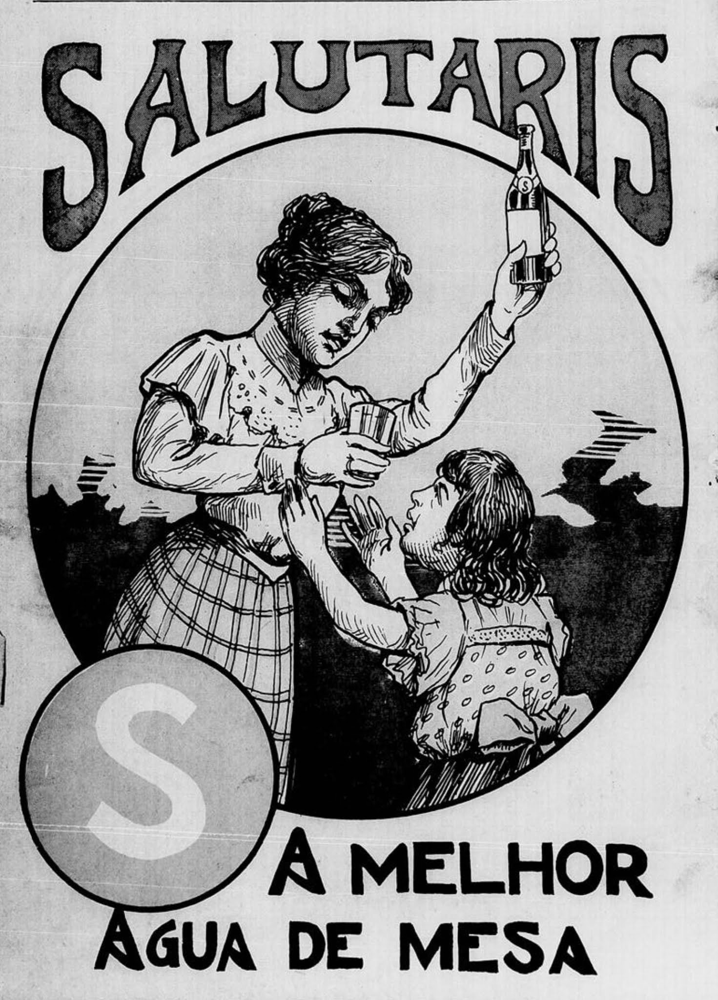
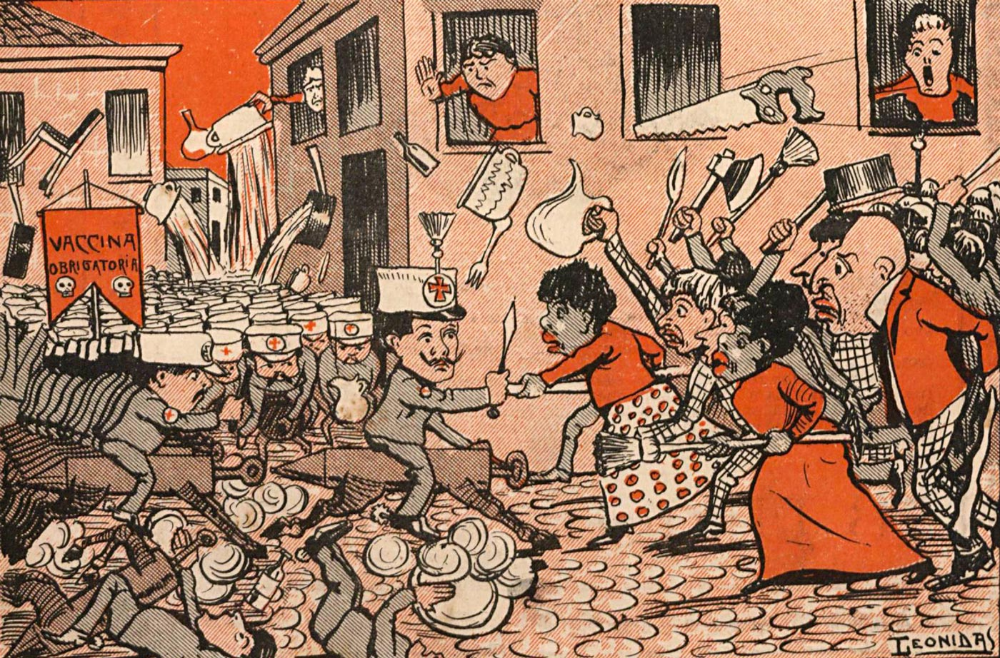

Fato ou Fake
Últimas Notícias
Resumo dos Acontecidos
Últimas Notícias
Vacinação Contra a Varíola se Torna Obrigatória em Toda a Cidade do Rio Janeiro
Medida drástica é anunciada para conter a propagação da doença, provocando reações diversas na população.
31/10/1904
Casas Invadidas: Relatos de Abusos Durante a Imposição da Vacinação Forçada
Moradores denunciam invasões e métodos coercitivos utilizados por agentes de saúde.
10/11/1904

AD
Desinformação e Boatos: Mitos Sobre a Vacina Espalham-se Rapidamente pela População
Rumores e fake news alimentam o medo e a resistência, complicando a situação de saúde pública.
28/10/1904
Debate no Congresso: Parlamentares Questionam a Constitucionalidade da Vacinação Obrigatória
Senadores e deputados discutem os limites da intervenção estatal nos direitos individuais.
28/10/1904
Revolta Popular: Edifícios Públicos Atacados em Protesto Contra a Vacinação Obrigatória
Manifestantes destroem propriedades do governo em um dia marcado por intensa violência.
13/11/1904
Acervo

Confira Nosso Acervo
Fotos, charges e notícias da época!